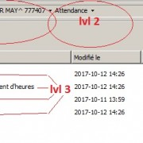
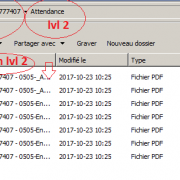

So I have a problem with a huge amount of files I need to move up one level to its parent directory.
I have searched all around but it seems like my issue is unique ( perhaps )
Bascally I have 3 levels of sub folders and I need to eliminate the third .

The third level has multiple folders and each individual folder has a .pdf inside.
So the four subfolders in the picture need to go leaving the pdfs inside the "attendance" folder like this

So what ive been doing is searching with * in the second level, cutting the pdfs out of the third, returning to the second and pasting then deleting the empty third level folders after.
This isnt so bad for one folder but Ive got 1080 folders to go though
Im not familiar with making my own script but ive seen them in action and they seem super powerful when done right.
Is what im asking doable with one script or do i have to make one for each of the third level sub folders since they all have unique names.
I with I could just select them all and click move to parent directory but thats in a perfect word huh.
Any help is greatly appreciated !
Thanks ,
Dan.